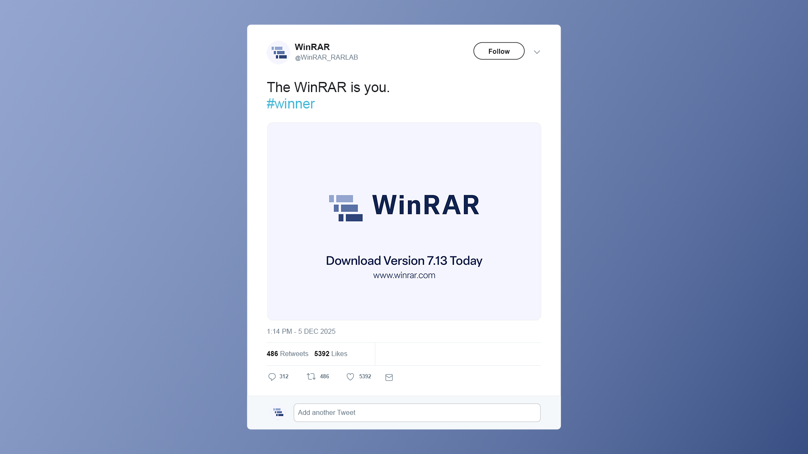
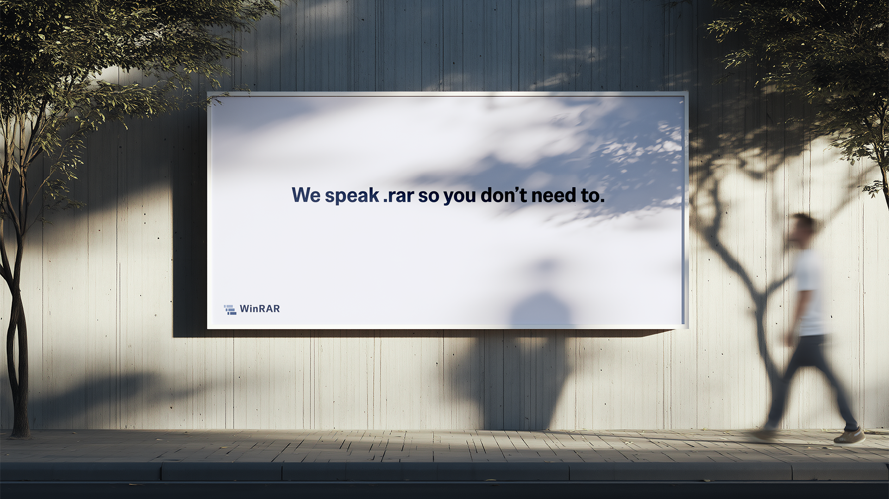
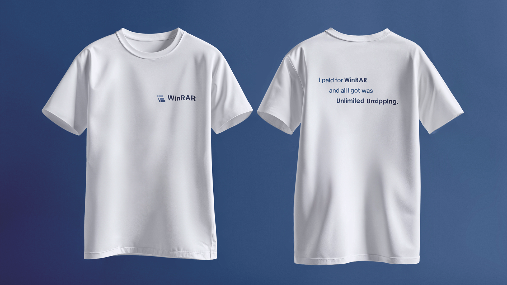
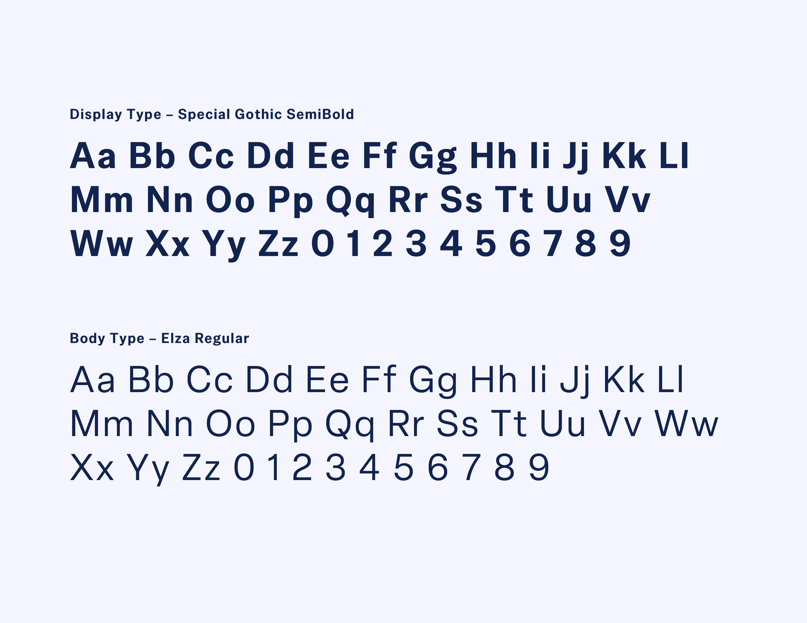
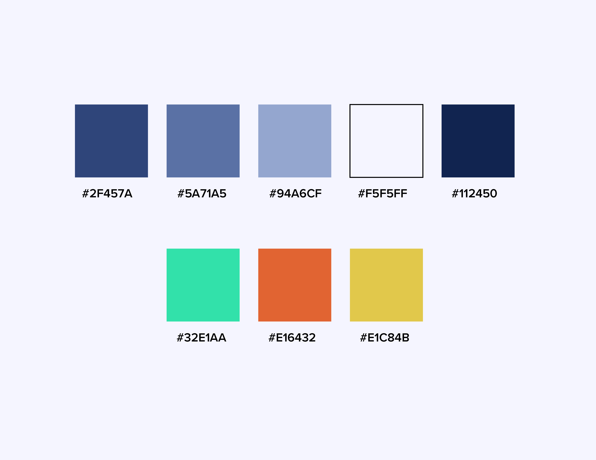

This project focused on reimagining the visual identity of WinRAR, a widely recognised but visually outdated software brand. The goal was to modernise its appearance while preserving the core elements that contribute to its strong recognition among users.
The process began with an analysis of WinRAR's existing branding, identifying its strengths and limitations. The original logo, featuring three detailed books bound by a belt, was found to be visually dated and rooted in early 2000s design aesthetics. While the belt symbolised file compression, it no longer accurately reflected the software's broader functionality.
Research into contemporary design trends highlighted a shift toward minimal, geometric, and highly scalable visual identities, particularly within the tech industry. Competitor analysis revealed a lack of strong, distinctive branding in the file compression space, presenting an opportunity to position WinRAR more clearly within a modern digital landscape.
A key insight was the strong recognition of the three-book motif. This informed the decision to retain the concept while reinterpreting it in a simplified and more versatile form. Additionally, the brand's long-standing association with internet culture and humour was considered as part of its identity, influencing the tone of the final applications.
The redesigned logo abstracts the three books into clean, geometric rectangular forms. This simplification improves scalability and adaptability across digital platforms while maintaining a visual link to the original identity.
The structured arrangement of the blocks communicates ideas of compression, modularity, and data organisation, while also suggesting stability and reliability. The removal of the belt element allows the logo to move beyond a narrow association with file compression, better representing the software's broader capabilities.
The visual identity was built around a modern, minimal aesthetic. A contemporary sans-serif typeface (Special Gothic Semibold) was selected for its clarity and strong geometric qualities, which complement the logo's form.
A blue-based colour palette was developed to communicate trust, reliability, and technical precision. The transition from lighter to darker tones introduces depth and subtly reflects the concept of data transformation, reinforcing the product’s functionality. The restrained use of colour ensures consistency across digital and physical applications while maintaining a clean and professional appearance.


The rebrand was applied across multiple touchpoints to test its flexibility and effectiveness. These included a redesigned software interface, social media content, advertising, and merchandise.
The application approach balances professionalism with a subtle, self-aware tone that acknowledges WinRARs cultural presence online. For example, social media executions incorporate light humour to increase relatability, while maintaining clarity and focus on user engagement.
Across all applications, the design prioritises simplicity, usability, and strong visual hierarchy. The result is a cohesive brand system that feels modern, recognisable, and adaptable across a range of contexts.


